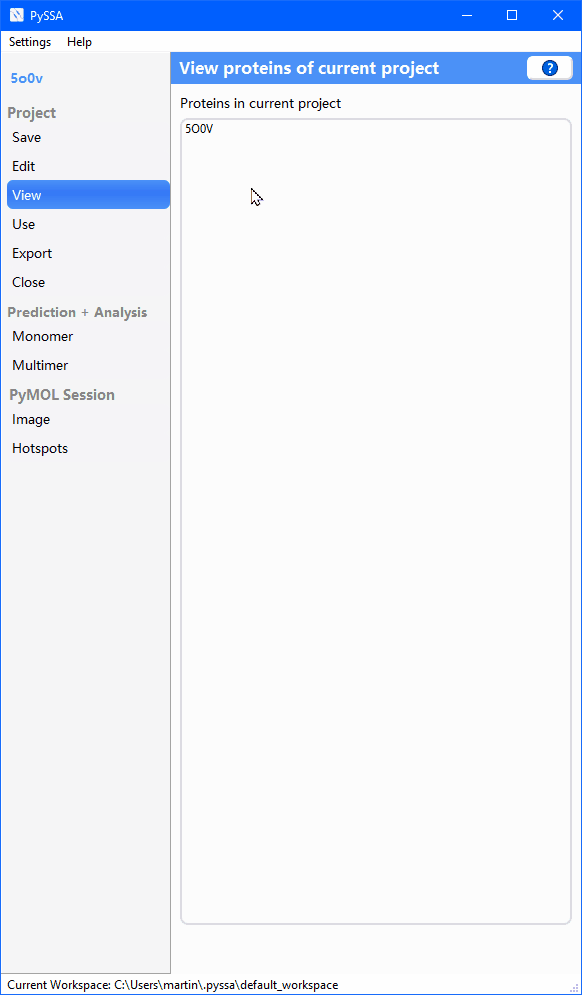

Here are the latest features and bug fixes described.
With this version and onwards there will be a changelog with the most important updates and bug fixes. The changelog will open automatically if you first start a new PySSA version. In addition, the changelog can be accessed through the "Help" menu.
It is now possible to rename protein structures from the edit page.
If you want to get notified when the session gets switched and progress of the active session will be lost, check the checkbox in the global settings.
Minor bug fixes.